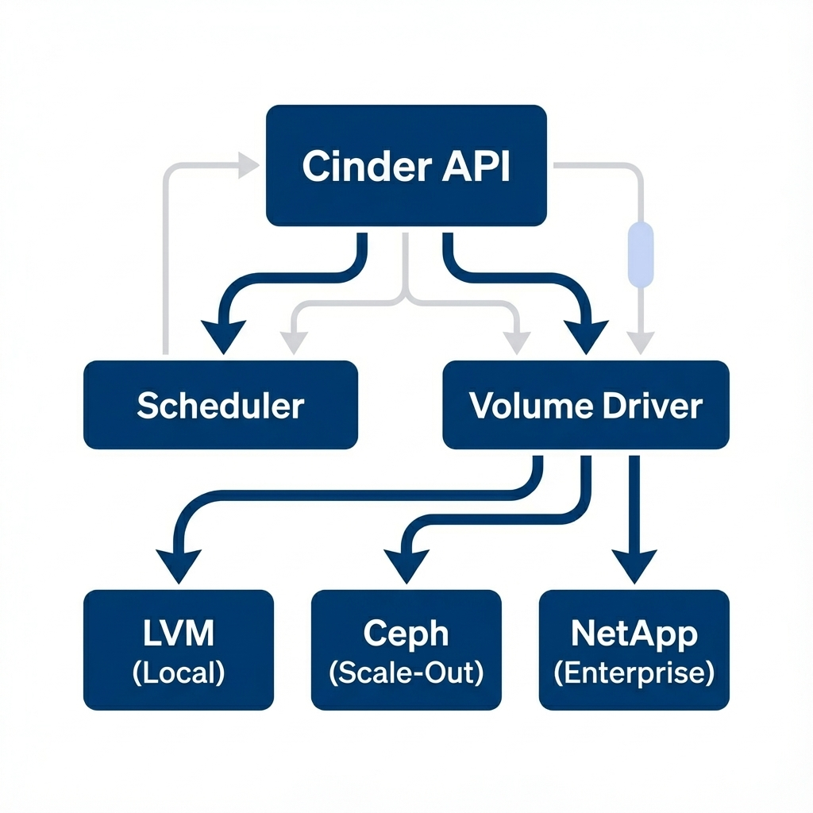
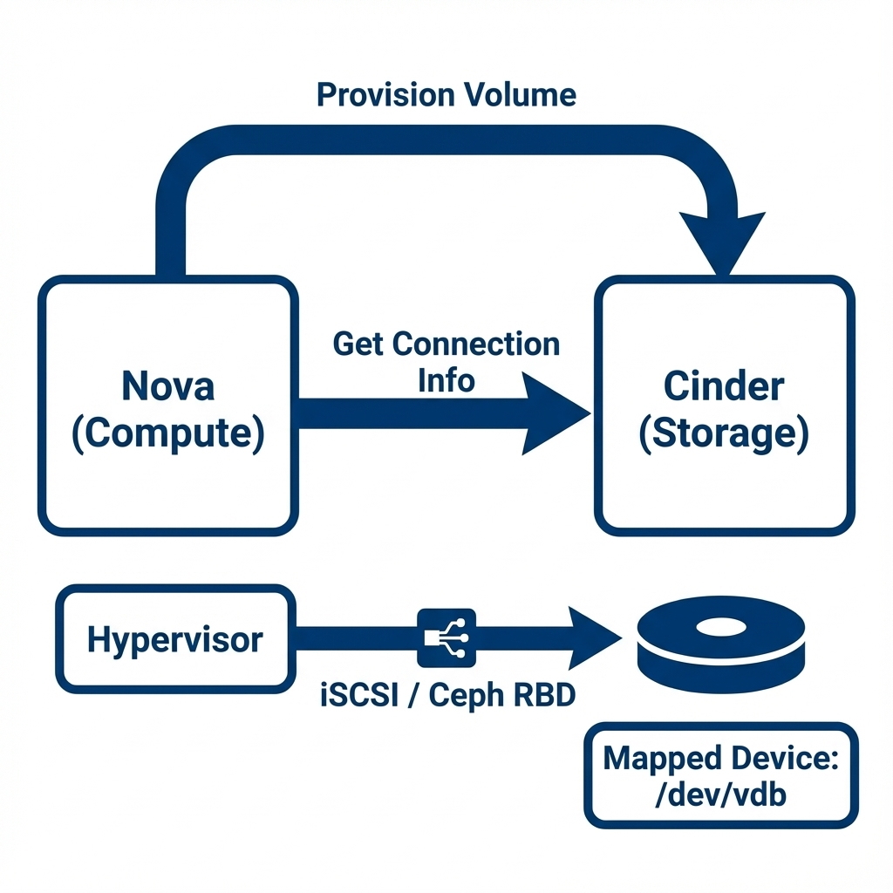
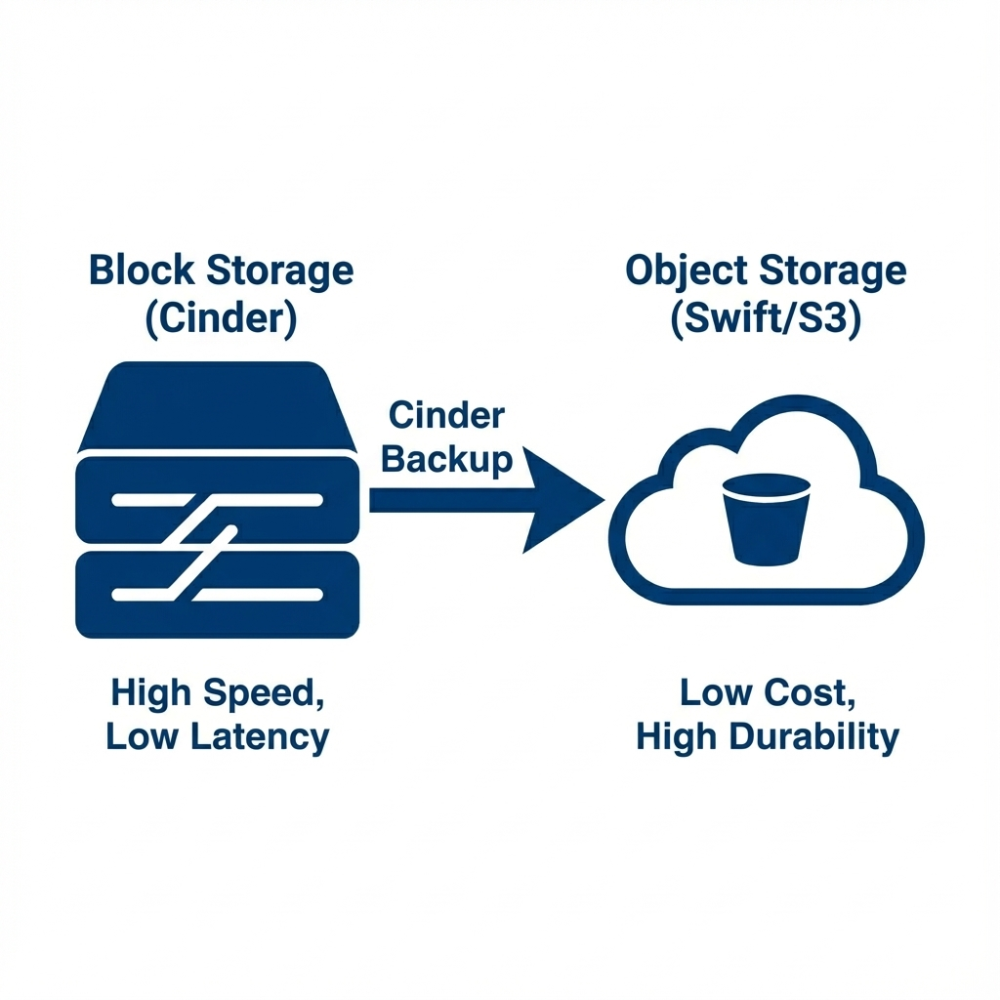

Storage and Persistence (Cinder)
Student NotesCourse: Computer Systems Engineering Module: Operating Systems 3 (Virtualisation & Cloud Technologies) Topic: Storage and Persistence (Cinder) Estimated Reading Time: 25 Minutes
[!TIP] How to succeed in this week: Understand the critical difference between ephemeral and persistent storage—VMs are temporary, but data should last forever. Cinder volumes are like USB drives for your cloud instances.
1. The Hierarchy of Cloud Storage
In Week 9, we launched compute instances, but if we terminate them, the data on their root disk is deleted. This is known as Ephemeral Storage. For a business like Nebula Inc., we need a place to store our critical customer database that survives even if the Virtual Machine is destroyed.
This is the domain of Persistent Block Storage (Cinder).
Industry Context:
- OpenStack Cinder performs the exact same role as AWS Elastic Block Store (EBS) or Azure Managed Disks.
- It provides a "raw hard drive" over the network that you can plug into your instance.
1.1 Ephemeral vs. Persistent Storage
It is crucial to distinguish between the two primary ephemeral and persistent storage models in cloud architectures. Ephemeral Storage (Nova) is strictly tied to the lifecycle of the Compute Instance. It functions effectively as a local scratch disk, optimized for operating system caches and temporary file processing. However, if the instance is terminated or the underlying hypervisor fails, this data is irrevocably lost. In contrast, Persistent Storage (Cinder) operates as an independent capability. A Cinder volume operates similarly to a physical USB drive or a SAN LUN; it exists independently of any single server. This durability ensures that critical datasets, such as customer databases or file servers, can survive compute failures and can be detached and re-attached to healthy instances during recovery operations.
Section 1 Checkpoint
Summary:
- Ephemeral Storage (Nova): Temporary, fast, dies with the VM. Use for OS / Cache.
- Persistent Storage (Cinder): Durable, independent, survives VM deletion. Use for Databases / Critical Data.
- Analogy: Ephemeral is RAM/Swap; Persistent is the Hard Drive.
Reflection:
- Why shouldn't you store your customer MySQL database on the Nova Ephemeral disk?
- If you delete a Cinder Volume, is the data recoverable? (Hint: Only if you have a Backup).
2. Block Storage Architecture (Cinder)
Cinder is the software that orchestrates storage devices; it does not usually store the data itself. Instead, it acts as a translation layer between the user and the physical storage hardware.
2.1 The Driver Model
Just as Nova utilizes virtualization drivers to interact with various CPU architectures, Cinder employs a Volume Driver architecture to communicate with diverse storage backends.
 Figure 1: Cinder Architecture - The Cinder Scheduler selects the backend, and the Volume Driver translates API calls into storage commands
- Laboratory: The LVM Driver manages local logical volumes on a standard Linux server.
- Enterprise: Customized drivers for Dell EMC, NetApp, or HPE arrays translate API calls into proprietary storage commands.
- Scale-Out: The Ceph Driver allows Cinder to provision resources from a distributed, software-defined storage cluster. When a user executes a creation command, Cinder identifies the correct driver and signals the backend hardware to provision the requested Logical Unit Number (LUN).
2.2 The Attachment Process (iSCSI/RBD)
The mechanism for attaching a volume to an instance involves a coordinated handshake between services.
 Figure 2: The Attachment Handshake - How Nova and Cinder coordinate to plug a remote disk into a running VM
- Provision: Cinder provisions the logical volume on the specific storage array.
- Request: Nova requests the connection parameters—typically the Target IQN (iSCSI) or Monitor IP (Ceph)—from Cinder.
- Connect: Nova configures the Hypervisor (KVM) to initiate a storage login session using the appropriate protocol.
- Device Map: The local operating system kernel on the hypervisor detects the new block device (e.g.,
/dev/sdb) and passes it through to the virtual machine, which perceives it as a locally attached hard drive.
2.3 Deep Dive: Storage Backends
Cinder operates as an abstraction layer, capable of interfacing with a diverse array of storage backends. In private cloud environments, the two most prevalent technologies serve as excellent examples of this flexibility: the Network File System (NFS) and the Ceph distributed storage cluster.
2.3.1 NFS (Network File System)
The Network File System (NFS) represents the simpler deployment model, often utilized in smaller environments or laboratories. In this architecture, Cinder acts as a client that mounts a remote directory from an existing NAS appliance or Linux server (e.g., 192.168.1.5:/toptier). When a user requests a new volume, the Cinder Volume service generates a large file, typically in the QCOW2 format, within this mounted directory. While this approach is notably easy to implement—requiring only a standard Linux server or a commercial NAS like Synology—it suffers from scalability limitations. The performance of the entire cloud storage pool is often constrained by the throughput of the single network link connecting the Controller to the NAS, creating a significant bottleneck and a single point of failure.
2.3.2 Ceph (The Gold Standard)
In contrast, Ceph represents the industry standard for production-grade OpenStack deployments. As a software-defined storage solution, Ceph eliminates the need for a central storage controller. Instead, it aggregates storage capacity from hundreds of individual hard drives distributed across many physical servers, unifying them into a massive, scalable "Pool." The integration between Cinder and Ceph is facilitated by the librbd library, which allows Cinder to manage reliable RADOS Block Devices (RBD).
Ceph distinguishes itself through its self-healing capabilities and advanced snapshotting mechanism. When data is written to a Ceph-backed volume, it is split into 4MB objects and scattered deterministically across the cluster. If a physical drive fails, the cluster automatically detects the missing objects and replicates them from surviving redundant copies, effectively healing the system without human intervention. Furthermore, because Ceph manages data as discrete objects, it can create instantaneous snapshots using a Copy-on-Write mechanism. This allows administrators to generate thousands of recovery points without incurring the performance penalties associated with traditional storage arrays.
Implementation Note: In production, Ceph is the preferred backend because it decouples storage from compute hardware entirely, allowing indefinite scaling.
2.3.3 Configuring Cinder with Ceph
Note: This assumes a Ceph cluster is already running. To learn how to build one from scratch, see the Optional Ceph Setup Guide.
To configure OpenStack Cinder to use a Ceph cluster as its backend, the administrator must edit the cinder.conf file on the Controller node. The process involves three key steps: installing the client libraries, authenticating, and defining the driver.
1. Install Ceph Client: The Cinder service requires the python libraries to communicate with the Ceph public network.
sudo apt install python3-rbd ceph-common
2. Authentication (Keyring): OpenStack acts as a client "user" to the Ceph cluster. You must copy the authentication keyring from the Ceph Monitor node to the Cinder node.
# On Cinder Node
scp ceph-node:/etc/ceph/ceph.client.cinder.keyring /etc/ceph/
chmod 0640 /etc/ceph/ceph.client.cinder.keyring
3. Driver Configuration (/etc/cinder/cinder.conf):
Define a new backend section (e.g., [ceph]) and reference it in the enabled_backends list.
[DEFAULT]
enabled_backends = ceph
[ceph]
volume_driver = cinder.volume.drivers.rbd.RBDDriver
volume_backend_name = ceph
rbd_pool = volumes
rbd_ceph_conf = /etc/ceph/ceph.conf
rbd_flatten_volume_from_snapshot = false
rbd_max_clone_depth = 5
rbd_store_chunk_size = 4
rados_connect_timeout = -1
glance_api_version = 2
2.3.4 Configuring Cinder with NFS
For smaller deployments or lab environments, NFS is a common backend. It requires a dedicated text file to list the shares and a specific driver configuration.
1. Create Shares File:
Create a text file (e.g., /etc/cinder/nfs_shares) and list your NFS exports, one per line.
192.168.1.100:/var/nfs/cinder
192.168.1.100:/var/nfs/backup
2. Set Permissions: Ensure the Cinder user can read this file.
chown root:cinder /etc/cinder/nfs_shares
chmod 0640 /etc/cinder/nfs_shares
3. Driver Configuration (/etc/cinder/cinder.conf):
[nfs]
volume_driver = cinder.volume.drivers.nfs.NfsDriver
volume_backend_name = nfs
nfs_shares_config = /etc/cinder/nfs_shares
nfs_mount_point_base = /var/lib/cinder/nfs
Section 2 Checkpoint
Summary:
- Cinder: Manages block storage (Creating/Attaching volumes).
- Backends: Connects to LVM (Local), NFS (File), or Ceph (Distributed).
- Ceph: The Gold Standard for OpenStack. Self-healing, scalable, compliant.
Reflection:
- Why is Ceph preferred over NFS for large clouds? (Hint: Single Point of Failure).
- What happens to a generic "File" on an NFS share when Cinder creates a volume? (It becomes a
.qcow2or.rawdisk image).
3. Data Safety Strategies
In enterprise cloud environments, ensuring data durability and availability against hardware failure is a critical architectural requirement. While Cinder provides robust block storage, the physical media underlying these volumes remains susceptible to corruption or catastrophic failure. To mitigate these risks and ensure business continuity, OpenStack implements two distinct data protection mechanisms: Snapshotting for point-in-time operational recovery, and Backups for comprehensive disaster recovery.
3.1 Snapshots (The Time Machine)
A Snapshot represents a point-in-time copy of a specific volume using a "Copy-on-Write" (Redirect on Write) mechanism. This technique ensures that the snapshot is created nearly instantly, as it relies on the existing data blocks rather than duplicating the entire drive volume. Snapshots are invaluable for functional recovery scenarios, such as capturing the state of a database before a major upgrade; if the upgrade fails, the administrator can rollback instantly. However, it is critical to note that snapshots typically reside on the same physical hardware as the source volume. Therefore, if the underlying storage array experiences a catastrophic failure, both the active volume and its snapshots will be lost.
3.2 Backups (The Disaster Plan)
To mitigate the risk of physical hardware failure, Backups provide a complete disaster recovery solution.
 Figure 3: Block vs Object Storage - Cinder Backups move data from expensive, fast Block Storage to cheap, durable Object Storage (Swift/S3)
A backup involves reading the full content of a block volume and transferring it to a separate, physically isolated system—typically an Object Storage service like Swift or Amazon S3. Although this process is slower due to network transfer requirements, it ensures data survivability. If the primary SAN or Ceph cluster were to be destroyed by fire or malfunction, the data could still be restored from the backup repository located in a different rack or data center.
3.3 Architecting Redundancy: Public vs. Private
In a Public Cloud (AWS/Azure), achieving higher redundancy is often as simple as selecting a premium tier in a dropdown menu. However, in a Private Cloud environment using OpenStack, you are the architect responsible for building these layers yourself. Understanding how standard cloud redundancy levels map to OpenStack implementation is crucial for designing robust infrastructure.
Level 1: Local Redundancy (LRS) The foundational level of data safety is Local Redundancy, known as LRS in Azure or EBS in AWS. This concept ensures that data survives disk failures within a single rack or datacenter. In an OpenStack private cloud, this is achieved natively through Ceph. By default, Ceph creates a "Replica=3" pool, which automatically stores three copies of every object on different physical Object Storage Daemons (OSDs). If a physical drive fails, the system self-heals by replicating the data from the surviving copies to a new drive, mirroring the durability guarantees of public cloud LRS.
Level 2: Zonal Redundancy (ZRS)
The next tier is Zonal Redundancy (ZRS), designed to ensure data survives the total destruction of a building due to fire or power loss. Public clouds implement this by replicating data across distinct Availability Zones—separate facilities with independent power and cooling. In OpenStack, you replicate this architecture using Cinder Availability Zones. By modifying cinder.conf, an administrator can define logical zones (e.g., zone-A, zone-B) and map them to specific storage racks or entirely separate Ceph clusters. This requires users to consciously select a zone when provisioning a volume, ensuring their application architecture can withstand a facility-level failure.
Level 3: Geo Redundancy (GRS) The highest level of protection is Geo Redundancy (GRS), which ensures survival against regional catastrophes, such as major natural disasters. While public clouds handle this via asynchronous replication between regions (e.g., North Europe to West Europe), a private cloud architect typically implements this using Cinder Backup. By configuring Cinder to send volume backups to a remote Swift Object Storage cluster located in a different city, you guarantee that critical data can be restored even if the primary datacenter is lost. More advanced (and expensive) setups can also utilize driver-level volume replication for real-time Active/Passive disaster recovery.
Section 3 Checkpoint
Summary:
- Snapshot: Quick, local, dependent on source. Use for "Undo" before changes.
- Backup: Slow, remote, independent. Use for Disaster Recovery (Fire/Flood).
- Redundancy: LRS (Disk Fail), ZRS (Rack/Building Fail), GRS (City Fail).
Reflection:
- Why isn't a Snapshot considered a true Backup?
- Which Cinder feature would you use to protect against a data center power outage? (Cinder Backup / Replication).
4. Operations Cookbook (Nebula Inc.)
We continue our role as the Cloud Engineer for Nebula Inc. We have a Web Server (nebula_web_01). Now we need a Database Server, but we need to ensure its data is safe.
4.1 Creating a Volume
We begin by provisioning a specific persistent volume for our database. This is analogous to purchasing a physical hard drive; initially, it exists as an unattached operational resource within the storage inventory.
openstack volume create --size 1 nebula_db_vol
4.2 Attaching the Volume
Once created, the volume must be physically connected to the compute instance. This command mimics the act of plugging a USB drive or SAS cable into a running server.
openstack server add volume nebula_web_01 nebula_db_vol
- Verification:
bash openstack volume list # Status should be "in-use"
4.3 Formatting and Mounting (Guest OS)
It is important to remember that Cinder delivers a raw block device (e.g., /dev/vdb) without any file system. The administrator must log into the Guest OS to format the disk and mount it for use effectively transferring responsibility from the "Cloud Provider" to the "OS Administrator".
# SSH into the VM
ssh cirros@<FLOATING_IP>
# Check for new disk (usually /dev/vdb)
lsblk
# Create Config Files (Simulating a DB)
# CirrOS is too small for mkfs, so we will write directly
sudo sh -c 'echo "Customer Data 123" > /dev/vdb'
4.4 Snapshotting
Before executing any destructive changes or updates to the database, standard procedure dictates creating a snapshot to preserve the current state.
openstack volume snapshot create --volume nebula_db_vol nebula_db_snap_v1
Section 4 Checkpoint
Summary:
- Process: Create Volume -> Attach to VM -> Format (mkfs) -> Mount.
- Guest Responsibility: The Cloud Provider connects the wire; YOU must format the disk.
- Persistence: Data survives detach/reattach and VM deletion.
Reflection:
- Why doesn't the volume show up automatically in
/mntwhen you attach it? - What Linux command lists all block devices? (
lsblk).
5. Industry Comparison: Storage
| Feature | OpenStack Cinder | AWS | Azure |
|---|---|---|---|
| Service Name | Cinder | EBS (Elastic Block Store) | Azure Managed Disks |
| Resource | Volume | EBS Volume | Managed Disk |
| Backup Target | Swift (Object Storage) | S3 | Azure Blob Storage |
| Connection | iSCSI / Ceph (RBD) | NVMe / EBS Direct | VHD / Blob |
| Snapshot Type | Copy-on-Write | Incremental | Incremental |
| --- |
7. Summary and Next Steps
This week we ensured that Nebula Inc. doesn't lose data. By implementing Cinder backed by Ceph, we provided a robust, persistent storage layer for our instances. We learned the difference between the "Scratchpad" (Ephemeral) and the "Vault" (Persistent). We also explored the critical difference between a convenience Snapshot and a disaster-proof Backup.
Preparing for Week 11
Next week, we stop clicking buttons manually. We will introduce Automation and APIs. We will learn how to deploy this entire infrastructure using code (Bash/Python) and configuration scripts (Cloud-Init), moving from "Pets" to "Cattle" effectively.
Checklist:
- Can you differentiate between
nova-computestorage andcinder-volumestorage? - Do you understand why we need to format a volume after attaching it?
- Review your Linux command line skills (loops and variables) for next week.
8. Additional Resources
- OpenStack Cinder Docs: docs.openstack.org/cinder/latest/
- AWS EBS Documentation: aws.amazon.com/ebs/
- Azure Managed Disks: azure.microsoft.com/en-us/products/managed-disks/
9. Lab Exercises
Now that you understand the theory of Persistent Storage, Cinder Backends, and Data Redundancy, it is time to build it.
- Week 10 Lab 1: Persistent Cloud Storage
- Goal: Create a volume, attach it to an instance, format it, write data, and simulate a migration to a second instance to prove persistence.
Test Your Knowledge
Ready to check your understanding of this week's material? Take the interactive quiz now!
Start Quiz